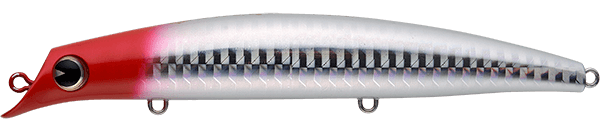
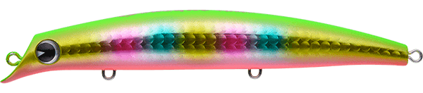
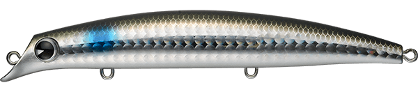
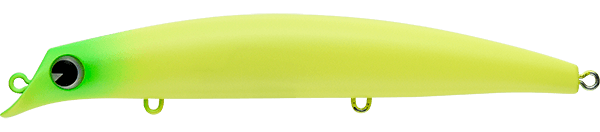

サスケ120S裂風
（sasuke 120S 裂風）
サスケ120S裂風はima（アイマ）のシンキングミノーです。
名作「sasuke 120 裂波」に1gのウエイトを追加したシンキングモデル。逆風下でもブッ飛ぶ遠投性能と、シンキングならではの水馴染みの良さで、裂波の一枚下のレンジをゆったりとしたウォブンロールで探れます。

画像出典:ima公式HP
スペック
- メーカー
- ima（アイマ）
- タイプ
- シンキング（ミノー）
- 全長
- 120mm
- 自重
- 18g
- レンジ
- 70〜100cm
- アクション
- ウォブンロール
- フック
- #6
- リング
- #3
- ターゲット
- シーバス
- 価格
- 2,530円（税込）
▼今すぐチェック

サスケ120S裂風の特徴
120裂波の泳ぎはそのままに、沈めて遠くを攻められるシンキングモデル
-
120裂波に1gを足したシンキング
ベースはフローティングの「sasuke 120 裂波」。1gのウエイトを追加してシンキングにしたことで、着水後すぐに水に馴染み、波や流れの中でも姿勢が安定します。
-
逆風下でもブッ飛ぶ遠投性能
公式も「逆風下でもブッ飛び仕様。荒れた日に最適」とうたう飛距離が持ち味。オープンエリアでは、その遠投性能で広い範囲を探れます。
-
ゆったりとしたウォブンロール
サスケシリーズらしい、ゆったりとしたウォブンロールでシーバスの食性を刺激。スローに引いてもしっかり泳ぐので、一枚深いレンジをじっくり見せられます。
サスケ120S裂風の使い方
基本はキャストして着水後に少し沈め、レンジを合わせてからのただ巻き。ゆっくり巻くほどウォブンロールが際立つので、スロー〜ミディアムの一定速度で引くのが基本です。
流れのある場所では、アップクロスに投げて流れに乗せながら巻くと、水馴染みの良さを生かしたドリフトができます。
サスケ120S裂風の得意な状況
風が強い日や波っ気のある日など、フローティングミノーでは飛距離が出なかったり、水面で暴れてしまったりする状況。磯やサーフで水に馴染ませてトレースしたいときや、裂波の一枚下のレンジをスローに攻めたいときに活躍します。
ワンポイント
同じ場所で「120 裂波」と投げ分けるのがおすすめです。表層の裂波で反応がなければ、裂風に替えて少し沈めてから巻くだけで、同じアクションのまま一段下のレンジを探れます。
サスケ裂波・裂風シリーズの使い分け
| モデル | 全長／自重 | 得意な場面 |
|---|---|---|
| sasuke 120 裂波 | 120mm／17g | フローティング。シャローを引き波立てながら探りたいときに |
| sasuke 120S 裂風 | 120mm／18g | シンキング。120裂波の一枚下のレンジをスローに引きたいときに |
| sasuke 140S 裂風 | 140mm／21g | シンキング。荒れた日や足場の高いポイントで飛距離と操作性が欲しいときに |
| sasuke 140S 真裂風 | 140mm／26g | シンキング（2026年11月発売）。アクションを抑えて、さらに遠く・深くを攻めたいときに |
フローティングの「裂波」はシャロー、シンキングの「裂風」はその一枚下のレンジ、と覚えると使い分けやすくなります。ベイトのサイズに合わせて120と140を選び、風や波が強い日ほどシンキングの裂風が出番です。
人気カラー
公式ラインナップ12色から4色を紹介します（カラー名は公式の表記のまま）。

レッドヘッド白いボディに赤い頭の定番カラー。濁りや夜でもシルエットがはっきり出るので、迷ったときの1本に。

玉彩チャートの背中に虹色の玉模様が並ぶ、imaらしいアピールカラー。朝マヅメや濁りが入ったときに。

ボラボラを意識したナチュラルカラー。河口や干潟でボラ・イナッコがベイトのときに。

マットチャート光を反射しないマットなチャート。濁り潮やローライトで、ぼんやりとしたシルエットを見せたいときに。
画像出典:ima公式HP
サスケ120S裂風に似ているルアー
-
 サスケ140S裂風
ima
詳細はこちら＞
サスケ140S裂風
ima
詳細はこちら＞
同じ裂風の140mm。ベイトが大きいときや、もう一段飛距離が欲しいときに。
-
 セットアッパー125S-DR
ダイワ
詳細はこちら＞
セットアッパー125S-DR
ダイワ
詳細はこちら＞
125mm・26gのシンキングミノー。さらに深いレンジを遠投で攻めたいときに。
-
 ブローウィン110S
ブルーブルー
詳細はこちら＞
ブローウィン110S
ブルーブルー
詳細はこちら＞
110mm・14gのシンキングミノー。少し軽めのシルエットで同じレンジを探りたいときに。